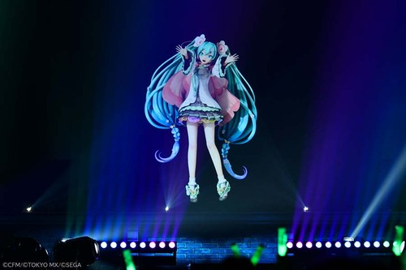
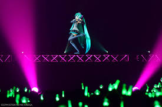

Culture and Community
Vocaloid concerts and events have become significant cultural phenomena, showcasing the evolution of virtual performances and the global impact of Vocaloid music.
What are some significant Vocaloid concerts or events?
One of the most notable events is **Miku Expo**, a series of international concerts featuring Hatsune Miku, one of the most famous Vocaloids. Since 2014, Miku Expo has toured various countries, including the United States, Europe, and Asia, bringing Vocaloid music to a global audience. These concerts are known for their high-quality holographic projections of Hatsune Miku and other Vocaloids, accompanied by live musicians. Fans can interact with the performances using glow sticks and other concert-specific merchandise, creating a lively and immersive experience.
Another major event is **Magical Mirai**, an annual concert and exhibition held in Japan since 2013 to celebrate Hatsune Miku's birthday. This event features live performances by Miku and other Crypton Future Media Vocaloids like Kagamine Rin and Len, Megurine Luka, MEIKO, and KAITO. Alongside the concerts, Magical Mirai includes exhibitions showcasing fan art, merchandise, and various interactive installations, allowing fans to engage deeply with the Vocaloid culture.
**Hatsune Miku Live Party (Mikupa)**, starting in 2011, was one of the first large-scale Vocaloid concerts. These concerts set the standard for future Vocaloid live events, with impressive holographic technology and live band performances that brought virtual characters to life on stage. Mikupa laid the foundation for future events like Miku Expo and Magical Mirai, expanding the possibilities for virtual concerts.
These concerts and events have played a crucial role in popularizing Vocaloid music worldwide, demonstrating the innovative use of technology in music performance and creating unique experiences that blend virtual and live elements. The success of these events underscores the global appeal of Vocaloid culture and its ability to bring together diverse communities of fans.
How has Vocaloid influenced pop culture?
Vocaloids have significantly impacted today's pop culture in various ways. These virtual singers have revolutionized music production, allowing creators to produce vocal tracks without traditional singers. This technology has democratized music creation, giving independent artists the tools to create professional-sounding vocals.
The rise of Vocaloids has introduced the concept of virtual idols, blurring the line between real and digital performers. Characters like Hatsune Miku have gained international recognition, influencing music scenes worldwide. This phenomenon has fostered a unique fan culture where enthusiasts create and share content, from music to artwork, further expanding the Vocaloid universe.
In the realm of live entertainment, Vocaloids have pushed the boundaries of performance. Holographic concerts and innovative stage shows featuring these virtual singers have become popular, merging technology with entertainment in unprecedented ways. This has not only captivated audiences but also challenged traditional notions of live music experiences.
Overall, Vocaloids have become a cultural phenomenon, influencing music, technology, and entertainment industries globally. They represent a unique intersection of art and technology, continually shaping and redefining aspects of modern pop culture.